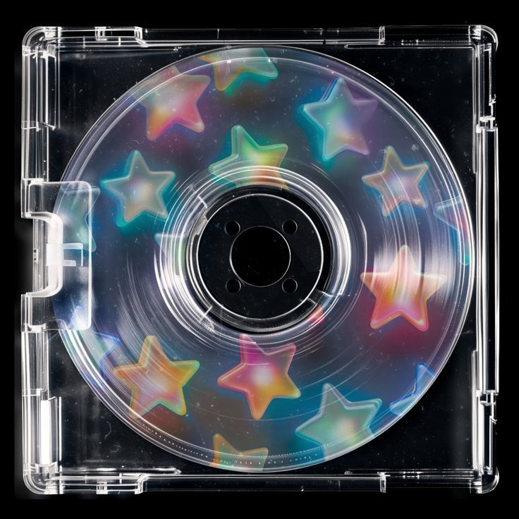

Amberlley Unada
Amberlley is your average craftsman who specializes in creating magical artifacts for interstellar travels. As well as charms, bracelets and customized vinyls good for your travels to keep you safe! She started this business because she was mainly inspired by watching too many sci-fi movies. However, she had already loved astronomy and space as a kid, so this business is perfect for her.